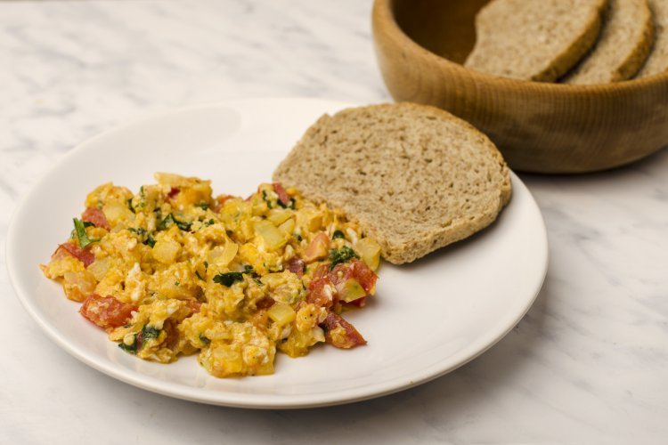
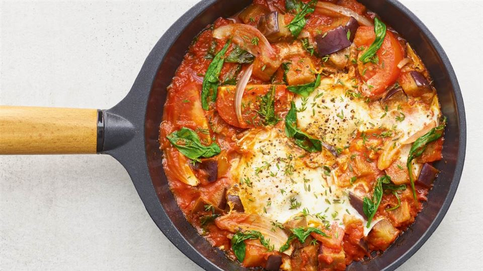
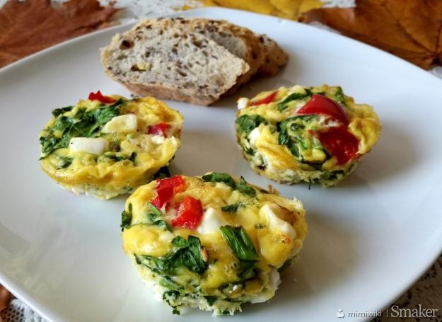

Scrambled Eggs
Scrambled eggs one of the most popular dishes for preparing eggs. It is fast tasty and most
importantly, you can prepare it in various ways and the only thing that limits us is the
imagination.

Ingredients:
- Eggs
- Butter
- Bacon
- Chive
Directions:
- Melt butter on a hot pan
- Put in bacon and fry until it's brown
- We stick eggs and reduce fire from time to time stirring
- Put the ready eggs on the plate, season with your favorite spices and sprinkle with the
cream
Bon appetit!!
Shakshouka
Dish of Tunisian cuisine. Shakshouka is boiled eggs in tomato sauce. Very filling, perfect for a
weekend breakfast. I personally tried once and fell in love. Sausage, salami and bacon perfectly
match the meal. Must be served with croutons

Ingredients:
- Butter
- Eggs
- Tomato sauce
- Chorizoo/Salami/Bacon/Ham
- Onion
- Spices: salt, pepper, sweet pepper, smoked pepper, cayenne pepper, Roman cumin
Directions:
- Melt butter on a hot pan
- Add finely chopped onion and the addition of meat
- When the onion and sausage are fried, add the tomato sauce, add spices.
- To the boiling sauce, dig eggs (in the middle of the pan make a "nest") reduce the heat
and cook under cover for 5 minutes
Bon appetit!!
Muffin Eggs
OPIS

Ingredients:
- Eggs
- Onion, paper, spinach
- Ham
- Mozarella
Directions:
- Melt butter on a hot pan
- Add finely chopped onion and the addition of meat
- When the onion and sausage are fried, add the tomato sauce, add spices.
- To the boiling sauce, dig eggs (in the middle of the pan make a "nest") reduce the heat
and cook under cover for 5 minutes
Bon appetit!!
Jajecznica
Jajecznica jedno z najpopularniejszych dań do przygotowania z jajek. Jest szybkie smaczne a co
najważniejsze można przygotować je na różne sposoby a w kwestii dodatków ogranicza nas tylko
nasza wyobraźnia
Jajecznica
Jajecznica jedno z najpopularniejszych dań do przygotowania z jajek. Jest szybkie smaczne a co
najważniejsze można przygotować je na różne sposoby a w kwestii dodatków ogranicza nas tylko
nasza wyobraźnia
Składniki:
- 1. Jajka
- 2. Masło
- 3. Bekon
- 4. Szczypiorem
Jajecznica
Jajecznica jedno z najpopularniejszych dań do przygotowania z jajek. Jest szybkie smaczne a co
najważniejsze można przygotować je na różne sposoby a w kwestii dodatków ogranicza nas tylko
nasza wyobraźnia